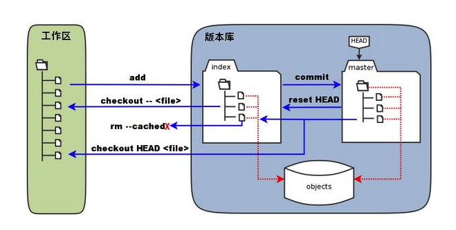

git工具
遇到的问题
1、经常，我们git管理的项目目录下还会有一个git项目， 这个时候我们上传到github上，展示不出来文件夹，所以要将子目录下面的.git 文件夹以及里面的文件删除掉； 但是，这个时候github上还是没有展示文件夹而是打不开的文件。
PS： 很可能是因为缓存的问题，也就是没有更新到，
—— 这个时候就需要删除掉缓存了；1
2git rm -r --cache "文件夹名称" // 删除缓存
git push -u origin master // 对应的分支
2、查看某个人写的代码的数量
git log –author=”felix” –pretty=tformat: –numstat | awk ‘{ add += $1; subs += $2; loc += $1 - $2 } END { printf “added lines: %s, removed lines: %s, total lines: %s\n”, add, subs, loc }’
// 或者所有的人：
git log –format=’%aN’ | sort -u | while read name; do echo -en “$name\t”; git log –author=”$name” –pretty=tformat: –numstat | awk ‘{ add += $1; subs += $2; loc += $1 - $2 } END { printf “added lines: %s, removed lines: %s, total lines: %s\n”, add, subs, loc }’ -; done
//代码总的函数：
参考链接： https://segmentfault.com/a/119000000854212
3、
Git 的工作需要调用 curl，zlib，openssl，expat，libiconv 等库的代码，所以需要先安装这些依赖工具。
从依赖上面就可以知道git大概做的处理；
4、配置用户信息1
2git config --global user.name "runoob"
$ git config --global user.email test@runoob.com
–global :
1）更改的配置文件就是位于用户目录下的那个，所有的项目将会默认使用这里的配置的用户信息；
2）想在某个特定的项目中使用其他的名字或者邮件，只要去掉–global 这个选项重新配置 ，新的设置保存在当前项目的.git/config 里面；
1 | git config --list // 查看配置的信息 |
5、git的一般工作流程：
- 克隆 Git 资源作为工作目录。
- 在克隆的资源上添加或修改文件。
- 如果其他人修改了，你可以更新资源。
- 在提交前查看修改。
- 提交修改。
- 在修改完成后，如果发现错误，可以撤回提交并再次修改并提交。
一般的工作提交代码的流程我们已经知道了大概了；
6、Git 工作区、暂存区和版本库
- 工作区：就是你在电脑里能看到的目录。
- 暂存区：英文叫stage, 或index。一般存放在 “.git目录下” 下的index文件（.git/index）中，所以我们把暂存区有时也叫作索引（index）。
- 版本库：工作区有一个隐藏目录.git，这个不算工作区，而是Git的版本库。

1）图中左侧为工作区，右侧为版本库；
暂存区（stage, index）：标记为 “index” ；
目录树 ： 标记为 “master” 的是 master 分支所代表的目录树。
“HEAD” : 实际是指向 master 分支的一个”游标”。所以图示的命令中出现 HEAD 的地方可以用 master 来替换。
objects : 标识的区域为 Git 的对象库，实际位于 “.git/objects” 目录下，里面包含了创建的各种对象及内容。
git add (命令):在工作区执行git add 命令的时候，
1）暂存区的目录树被更新；
2）同时工作区修改文件内容被写入到对象库的一个新的对象中；
3）对象的ID被记录到缓存区的索引中。
git commit ：
1）暂存区的目录树写到版本库（对象库）中；
2）master 分支会做相应的更新（master 指向的目录树就是提交时暂存区的目录树）。
git reset HEAD：
1）暂存区的目录树会被重写，被 master 分支指向的目录树所替换，但是工作区不受影响。
git reset HEAD -filename ： 撤销指定的文件/文件夹
git reset HEAD . ： 针对语句git add .的撤销
git rm –cached
git checkout . | git checkout –
1）会用暂存区全部或指定的文件替换工作区的文件。
2）！！！这个操作很危险，会清除工作区中未添加到暂存区的改动。
git checkout HEAD . | git checkout HEAD
1）会用 HEAD 指向的 master 分支中的全部或者部分文件替换暂存区和以及工作区中的文件。
2）这个命令也是极具危险性的，因为不但会清除工作区中未提交的改动，也会清除暂存区中未提交的改动。
6、git创建仓库
git init 初始化一个仓库, 会自动生成一个.git 目录
git init newrepo 指定目录作为仓库
git add *.c
git add README
git commit -m ‘初始化项目版本’
git 拷贝项目
git clone
git clone
7、git的基本操作
git init 创建一个仓库
git clone 克隆资源
git add 将资源添加到暂存区
git status 查看状态
git diff 命令显示已写入缓存与已修改但尚未写入缓存的改动的区别
尚未缓存的改动：git diff
查看已缓存的改动： git diff –cached
查看已缓存的与未缓存的所有改动：git diff HEAD
显示摘要而非整个 diff：git diff –stat
基本快照: git status -s
Git 的工作就是创建和保存你的项目的快照及与之后的快照进行对比
git add 命令将想要快照的内容写入缓存区，
git commit 将缓存区内容添加到仓库中。 a参数可以将git add 这个步骤省略；
- git reset HEAD 命令用于取消已缓存的内容。
简而言之，执行 git reset HEAD 以取消之前 git add 添加，但不希望包含在下一提交快照中的缓存。[就是没有跟踪到，回到了工作目录]
9、git rm : 也就是通过git来删除里面的管理追踪
git rm
git rm -f
git rm –cached
git rm –r * 递归删除， 文件夹
10、git mv
git mv 命令用于移动或重命名一个文件、目录、软连接。
git mv README README.md
1 | git commit、git push、git pull、 git fetch、git merge 的含义与区别 |
要从 Git 中移除某个文件，就必须要从已跟踪文件清单中移除，然后提交。
git branch -d
git push origin –delete
——————————————————————————————
1、git 分支管理：
（Git 的分支模型称为”必杀技特性”，而正是因为它，将 Git 从版本控制系统家族里区分出来。）
git branch (branchname) 创建分支
git checkout (branchname) 切换分支
[当你切换分支的时候，Git 会用该分支的最后提交的快照替换你的工作目录的内容， 所以多个分支不需要多个目录。]
git merge 合并分支
git branch 列出你在本地的分支。
git checkout -b (branchname)创建新分支并立即切换到该分支下
git branch -d (branchname) 删除分支
git status -s 查看状态
——————————————————————————————
Git 查看提交历史
git log 查看历史
git log –oneline 查看历史记录的简洁的版本
git log –oneline –graph 用 –graph 选项，查看历史中什么时候出现了分支、合并。
git log –reverse –oneline 用 ‘–reverse’参数来逆向显示所有日志。
git log –author=名字 –oneline -5 指定用户的提交日志可以使用命令
git log –oneline –before={3.weeks.ago} –after={2010-04-18} –no-merges 要指定日期，可以执行几个选项：–since 和 –before，但是你也可以用 –until 和 –after。
——————————————————————————————
git 标签
git tag -a v1.0 :打上v1.0的标签1
2
3可以用 git tag -a v1.0 命令给最新一次提交打上（HEAD）"v1.0"的标签;
-a 选项意为"创建一个带注解的标签"。 不用 -a 选项也可以执行的，但它不会记录这标签是啥时候打的，谁打的，也不会让你添加个标签的注解。
git tag -a 命令时，Git 会打开你的编辑器，让你写一句标签注解，就像你给提交写注解一样。
git log –decorate 看到我们的标签
如果我们忘了给某个提交打标签，又将它发布了，我们可以给它追加标签。
git tag -a v0.9 85fc7e7 : 给指定的店追加标签
git tag ： 查看我们的tag
git tag -a-m “runoob.com标签” //指定标签信息命令：
git tag -s-m “runoob.com标签” //PGP签名标签命令：t
git push –tag 把tag推到服务器上；
——————————————————————————————
github （开源的公共服务器管理代码）
git remote add [shortname] [url] // shortname 可以是一个简单的名字， url 就是仓库的url
github上面的配置已经来接了，通过ssh来进行验证；
git remote 查看到远程的仓库
git remote -v 查看到远程的url
git remote rm [别名] 删除远程仓库
coding 上面配置 ，和github一样
——————————————————————————————
Git 搭建服务器 【单间私人的仓库】
必须的库： curl-devel expat-devel gettext-devel openssl-devel zlib-devel perl-devel
http://www.runoob.com/git/git-server.html
git 帮助命令；
git help
man git-
git show v2.5:Makefile // 查看一些文件
git show 查看当前head的更改
1 | ls | wc -w是查看有多少个文件及文件夹 |